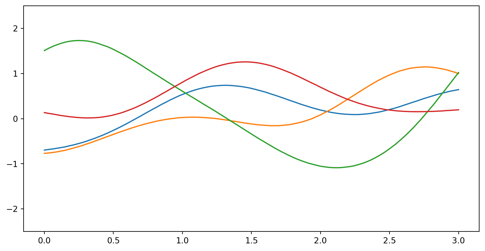

Varying Informativeness of Inductive Bias in Gaussian Processes Regression for Small Data
Andreas Besginow
University of Applied Sciences and Arts, Lemgo
Markus Lange-Hegermann
University of Applied Sciences and Arts, Lemgo
Background
Inductive bias


Gaussian Processes (GPs)
\(g(x)\sim\mathcal{GP}(\mu(x), k(x, x'))\)
\(g(x)\sim\mathcal{GP}(0, k(x, x'))\)
Samples from \(k_{\textrm{SE}}(x, x') = \sigma^2\exp\left(-\frac{(x - x')^2}{2\ell^2}\right)\)
Samples from \(k_{\textrm{Per}}(x, x') = \sigma^2\exp\left(-\frac{2\sin^2(\pi|x - x'|/p)}{\ell^2}\right)\)
Samples from \(k_{\text{Matern}}(x,x') = \frac{2^{1 - \nu}}{\Gamma(\nu)}\left( \sqrt{2 \nu} \frac{(x - x')^2}{\ell^2} \right)^{\nu} K_\nu \left( \sqrt{2 \nu} \frac{(x - x')^2}{\ell^2} \right)\)

Linear Ordinary Differential Equation Gaussian Processes (LODE-GPs)
\[ \left[ \begin{align*} x''(t) + l_1 f_1''(t) + g f_1(t) &= 0\\ x''(t) + l_2 f_2''(t) + g f_2(t) &= 0 \end{align*} \right] \]
Smith Normal Form
\(UAV = D\)
Apply\(\,V\)
\(\mathcal{GP}(0, VkV')\)
Data
Posterior
Experimental setup
(linearized) Bipendulum system
\[ \left[ \begin{align*} x''(t) + l_1 f_1''(t) + g f_1(t) &= 0\\ x''(t) + l_2 f_2''(t) + g f_2(t) &= 0 \end{align*} \right]\\ \]
\[ A\cdot f = \begin{bmatrix} \partial_t^2 + \frac{g}{l_1} & 0 & -\frac{1}{l_1}\\ 0 & \partial_t^2 + \frac{g}{l_2} & -\frac{1}{l_2}\\ \end{bmatrix} \cdot \begin{bmatrix} f_1(t)\\ f_2(t)\\ u(t) \end{bmatrix} = 0\\ \]
The settings
- \(\operatorname{BIP}\)
- \(\operatorname{BIP}^1\)
- \(\operatorname{BIP}^2\)
- \(\operatorname{BIP}^{1 + 2}\)
- \(\operatorname{BIP}^{1 + \partial \cdot 2}\)
- \(\operatorname{BIP}^{\text{Moon}}\)
- \(\operatorname{BIP}^{\text{Param}}\)
- \(\operatorname{BIP}^\emptyset\)
Varied rope lengths \(l_1, l_2\):
- \((1.0, 2.0)\) (Same as data)
- \((1.0, 3.0)\)
- \((2.0, 3.0)\)
- \((3.0, 6.0)\)
Total of \(26\) different systems tested
\[ \begin{align} \begin{split}\label{eq:ode_solution_data_gen} f_1(t) &= \frac{781}{8000}\frac{\sin(t)}{t} - \frac{1}{20}\frac{\cos(t)}{t^2} + \frac{1}{20}\frac{\sin(t)}{t^3} \\ f_2(t) &= \frac{881}{8000}\frac{\sin(t)}{t} - \frac{1}{40}\frac{\cos(t)}{t^2} + \frac{1}{40}\frac{\sin(t)}{t^3} \\ u(t) &= \frac{688061}{800000}\frac{\sin(t)}{t} - \frac{2543}{4000}\frac{\cos(t)}{t^2} + \frac{1743}{4000}\frac{\sin(t)}{t^3} - \frac{3}{5}\frac{\cos(t)}{t^4} + \frac{3}{5}\frac{\sin(t)}{t^5} \end{split} \end{align} \]
Some examples
Some examples - 2
\[ A = \begin{bmatrix} \partial_t^2 + \frac{g}{l_1} & 0 & -\frac{1}{l_1}\\ \end{bmatrix} \]
\[ A = \begin{bmatrix} 0 & \partial_t^2 + \frac{g}{l_2} & -\frac{1}{l_2}\\ \end{bmatrix} \]
The results
Results - 1
Results - 2
Results - 3
…But.
Thank you! Questions?
Andreas Besginow - andreas.besginow@th-owl.de
Markus Lange-Hegermann - markus.lange-hegermann@th-owl.de


Impact of Varying Inductive Bias in GPs for Small Data - Andreas Besginow